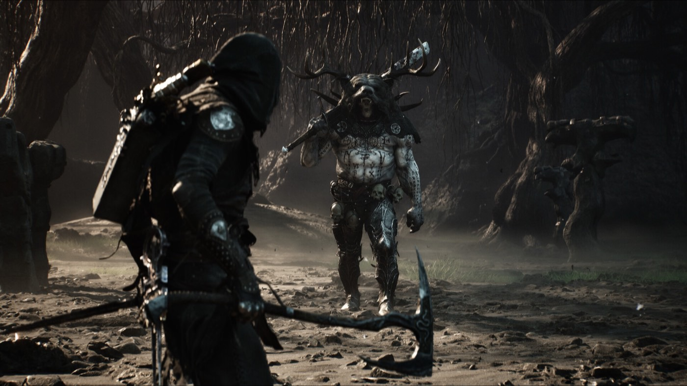

Boss guide
How to beat Magdalena, the Lady of the Woods
Mechanically she is one of the simpler fights in the game. She kills people anyway, because almost everything she does punishes the instinct this genre trained into you: parry, then punish. Here, you dodge.

The short version
Do not treat this as a parry test. Most of her offence cannot be blocked normally, so dodging is the more consistent way to survive.Tested Bring burn mitigation, bring a fast weapon, and save some Resolve for the end of the fight — at low health she surrounds herself with flies and you will need to finish her at range.Tested
What to bring
- Effigy — Burnt Effigy in the passive slot, not the active one. Passive gives you burn mitigation for the whole fight, which matters because her signature move surrounds her in flame.Unconfirmed
- Weapon — something fast. She moves constantly, and a two-handed sword or axe will not land before she has repositioned.Unconfirmed
- Sidearm — mandatory. The final phase is not winnable in melee.Tested
- Seal — the Slayer Seal builds Break damage quickly, which sets up the riposte loop.Tested
Getting to her
She is at the end of the Glutted Mire, past the Wandering Shepherd mini-boss and the chest holding the Etching Needles.Unconfirmed The run from the nearest Beacon to her arena has no major enemies in it, so a death is cheap in time terms.Unconfirmed
Phase one: bait, hit twice, leave
Her attacks telegraph clearly. The mistake that kills people is not misreading them — it is trying to fit in one more hit afterwards.Unconfirmed
The charge. Unparryable.Tested Give her the space to commit to it, dodge, close while she recovers, land one or two hits, and get out.Unconfirmed
The spinning flame attack. She surrounds herself in fire and sweeps. Dash outward, wait for the animation to finish, then punish the recovery.Tested
Staying close. Her most dangerous moves exist to punish lingering.Tested Distance is not cowardice here, it is the strategy.
The Break and riposte loop
With Break damage accumulating, fill her Break meter, land the riposte, and repeat two or three more times.Tested The cost is Resolve, which your sidearm also spends — so bait her toward the edges of the arena where you have room to manage both.Tested
Phase two: the Fly Storm
At roughly five to ten percent health she casts a swarm that circles her and stops you closing in.Tested She also summons additional enemies.Unconfirmed
This is where the fight is actually lost. If you arrive at her health bar's last sliver with no Resolve banked, you have no way to damage her and no way to get close. Start conserving Resolve while she is still around a quarter health, and finish the fight with your sidearm.Tested
Reward
Magdalena's Memento, a Tarstone that spends 100 Resolve to unleash a flurry of strikes.Unconfirmed
Still dying?
| Symptom | Actual cause | Change |
|---|---|---|
| Parries keep failing | Most of her moveset is unparryable | Dodge instead |
| Fire takes half your health | Burnt Effigy is not in the passive slot | Move it to passive |
| Punished after two hits | Greed | Hit twice, then disengage |
| Cannot finish her off | No Resolve banked for the Fly Storm | Conserve from 25% health |
| Swings never connect | Weapon too slow | Switch to a fast weapon |
Where this comes from
Every claim above carries a marker. These are the sources behind them, graded by how directly they touch the retail build.
- Game8 — Magdalena location and how to beat TestedRoute through the Mushroom Village Gate Corrupted Gate; charges are unparryable; ranged and fast weapons favoured; the flame AoE and fly swarm as the two most dangerous moves
- Fextralife — Magdalena the Lady of the Woods TestedBreak meter and riposte loop; Slayer Seal recommendation; the Fly Storm trigger at 5–10% health; managing Resolve against sidearm use. Note: this page describes the fight as a beta encounter.
- GameTyrant UnconfirmedBurnt Effigy in the passive slot for burn mitigation; fast weapon reasoning; Magdalena's Memento reward
- gamer.org UnconfirmedBait-and-punish rhythm; the clean Beacon run; the Wandering Shepherd and Etching Needles as prerequisites
- Sportskeeda — beta walkthrough UnconfirmedThe Wandering Shepherd mini-boss and how to approach it
- YouTube fight recordings (June 2026) PlayersFrame-level timing on the charge wind-up and flame duration — not yet extracted